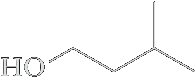
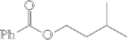

Acid Halides (alogenuri di alcanoile)
The functional group of an acid halide (acyl halide − it. alogenuri acilici o alogenuri di alcanoile) is an acyl group (RCO−) bonded to a halogen atom.


Acid chlorides are the most common acid halides. Acid chlorides result from substituting a chlorine for the hydroxy group of a carboxylic acid. Although other acid halides also exist, they are seldom encountered.

(Acetyl chloride)

Hydrolysys
Low-molecular-weight acid chlorides react very rapidly with water to form carboxylic acids and HCl. Acid chlorides are so reactive that hydrolysis does not require acid or base catalysis, and therefore the steps in the mechanism do not involve putting on or taking off protons prior to the nucleophilic attack and/or the leaving group departure
Reaction with Alcohols
An acid halide reacts with an alcohol to give an ester. Because acid halides are so reactive toward even weak nucleophiles such as alcohols, no catalyst is necessary for these reactions. In cases in which the alcohol or resulting ester is sensitive to acid, the reaction can be carried out in the presence of a tertiary amine to neutralize the HCl as it is formed. The amines most commonly used for this purpose are pyridine and triethylamine
| Pyridine | Et3N Triethylamine |
When used for this purpose, each amine is converted to its hydrochloride salt. Pyridine, for example, is converted to pyridinium chloride, as illustrated by its use in the synthesis of isoamyl benzoate.
| Benzoyl chloride | + | 3-Methyl-1-butanol (Isoamyl alcohol) | + | Pyridine | ⟶ | 3-Methylbutyl benzoate (Isoamyl benzoate) | + | Pyridinium chloride |
Aminolysis
Acid halides react readily with ammonia and 1° and 2° amines to form amides. For complete conversion of an acid halide to an amide, two equivalents of ammonia or amine are used, one to form the amide and one to neutralize the hydrogen halide formed. If, however, the amine component is valuable, amide synthesis is often carried out using 1 equivalent of the amine plus 1 equivalent of an inexpensive base such as NaOH.
